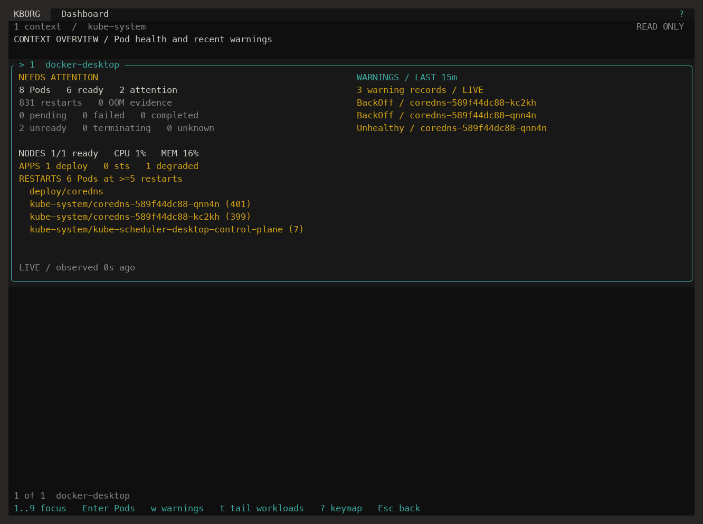

Problem solver
Application and infrastructure experience, brought together to work through complex challenges.
DevOps & Cloud Engineer
I design, automate and operate cloud infrastructure, platforms and CI/CD pipelines — connecting software engineering with reliable cloud delivery.
About
DevOps & Cloud Engineer
I’m a cloud and DevOps-focused software engineer with 12+ years of experience across backend development, cloud infrastructure and delivery automation.
My work brings together AWS and Microsoft Azure, containerised microservices, serverless applications and Infrastructure as Code. At Critical TechWorks, I work on automotive and electric-vehicle charging services, from application engineering through to cloud delivery.
I enjoy turning complex problems into clear, practical solutions — with automation that helps teams deliver consistently.
More about my backgroundApplication and infrastructure experience, brought together to work through complex challenges.
Repeatable infrastructure and delivery workflows, with less manual work between code and production.
From backend services and APIs to containers, cloud resources and deployment workflows.
A foundation in software development, with ongoing exploration through technical training and personal projects.
Experience
A career connecting application development, cloud infrastructure and platform delivery.
Cloud & DevOps focus
Critical TechWorks
Developing automotive and electric-vehicle charging services with Node.js microservices on Azure, containerised delivery with Kubernetes, Docker and Helm, and AWS serverless applications provisioned with CloudFormation.
Building Python Lambda functions integrated with API Gateway and DynamoDB, alongside React front-end components.
Intelligent at-home electric-vehicle charging in Europe (2022).
LTPLabs
Owned backend delivery across client projects, building Python/Django applications, managing AWS cloud infrastructure and contributing to Vue.js front-end development.
MOG Technologies
Delivered product features and custom plugins using JavaScript, Backbone.js, Ractive.js, Node.js, C#/.NET MVC and MongoDB. Implemented front-end unit tests with Jasmine and Karma.
Webcomum Consultoria
Built web applications and API integrations using PHP, JavaScript, AngularJS, Node.js, MySQL and MongoDB. Created responsive interfaces with Bootstrap and CSS/SASS and applied technical SEO practices.
Education
Specialisation Course in Technological Development of Multimedia Products · 2011–2014
Projects
A selection of public projects, practical utilities and hands-on exploration.

A Kubernetes terminal workspace for working across clusters, with dashboards, logs, metrics and reviewed operational workflows.
Explore projectAn offline coordinate calculator that turns positions into distance, bearing and compass direction. Built with C# and Windows Forms.
Explore projectA hands-on API project exploring Django REST Framework, test-driven development and containerised development with Docker Compose.
Explore projectSkills
The toolkit I use to develop applications and deliver cloud platforms.
AWS · Microsoft Azure
Kubernetes · Docker · Helm
CloudFormation · CI/CD
Python · Node.js · JavaScript
DynamoDB · MongoDB · MySQL
Quality · Collaboration · Delivery
Contact
Have an opportunity, a project or a cloud engineering challenge in mind? I’d be happy to connect.
Get in touch